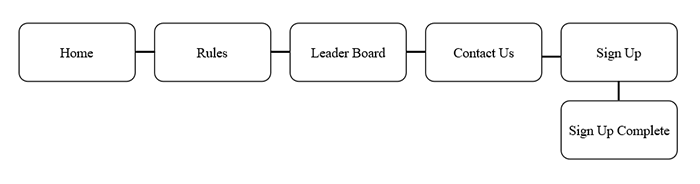

CP1406 - Assignment 1 - Project Plan Name: Jacinta McDonald
Goals
The goal of this website is to increase revenue for Slammers beach Volleyball by providing information which promotes the services which are offered to new and existing customers. The customer would like to see a 50% increase in customers each week from the 100 players they currently have.
Success Evaluation
The team sign up on the website will be able to measure the number of new teams signing up at Slammers which will result in additional new players. The number of "hits" which the website receives will provide an idea about the level of interest which the site is creating.
Target Audience
The target audience of this site are people aged fifteen to thirty years of age. This audience will be targeted through bright colours, interesting fonts and a sleek design.
Site Flowchart

GitHub Repository
http://ditwebtsv.jcu.edu.au/~jc299646/a1/